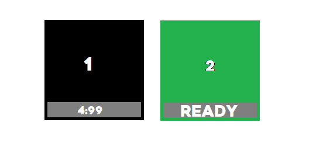
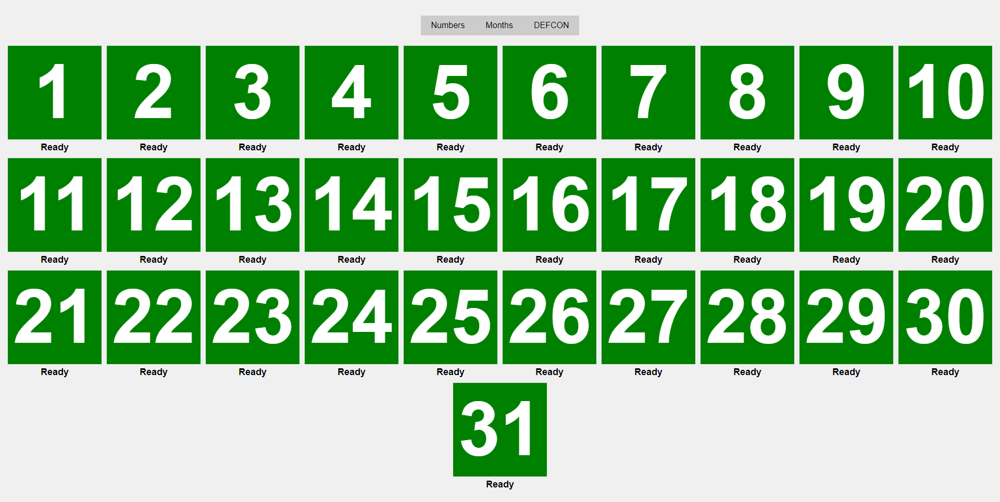
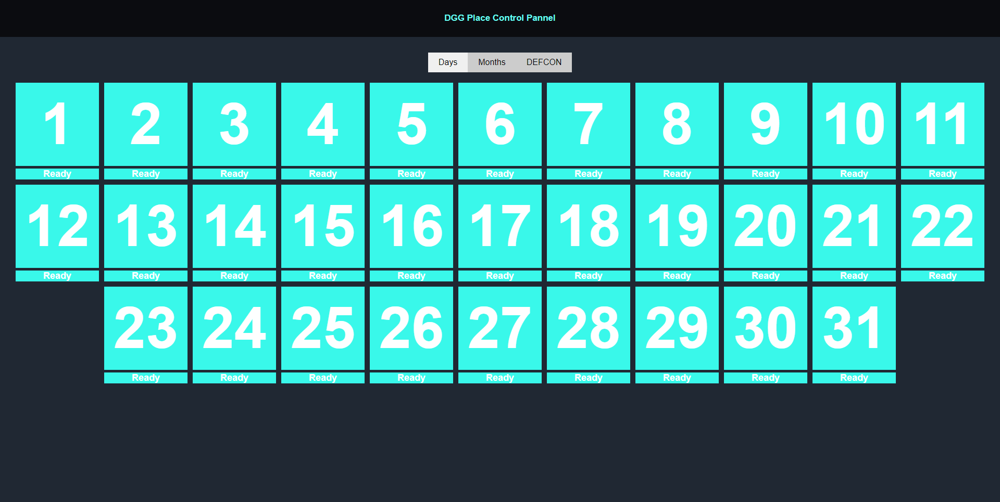
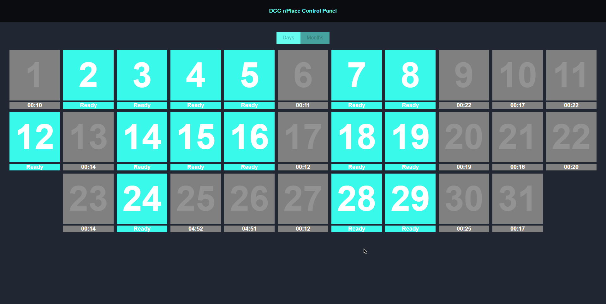
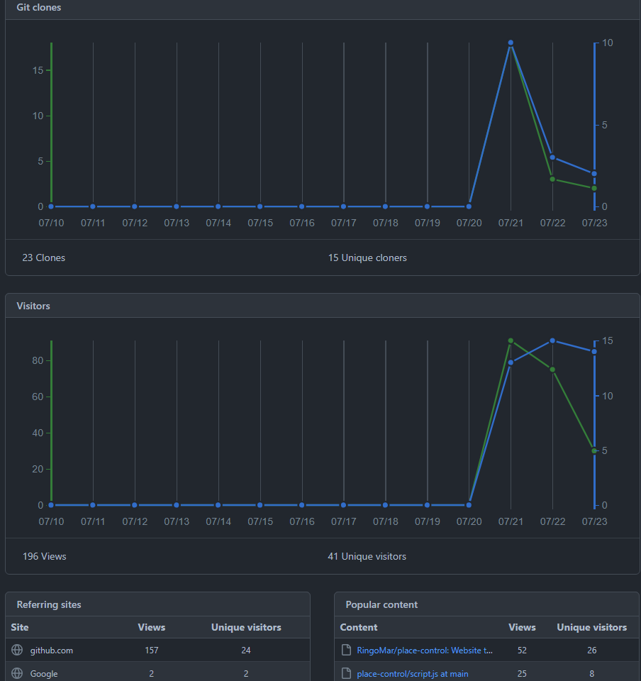
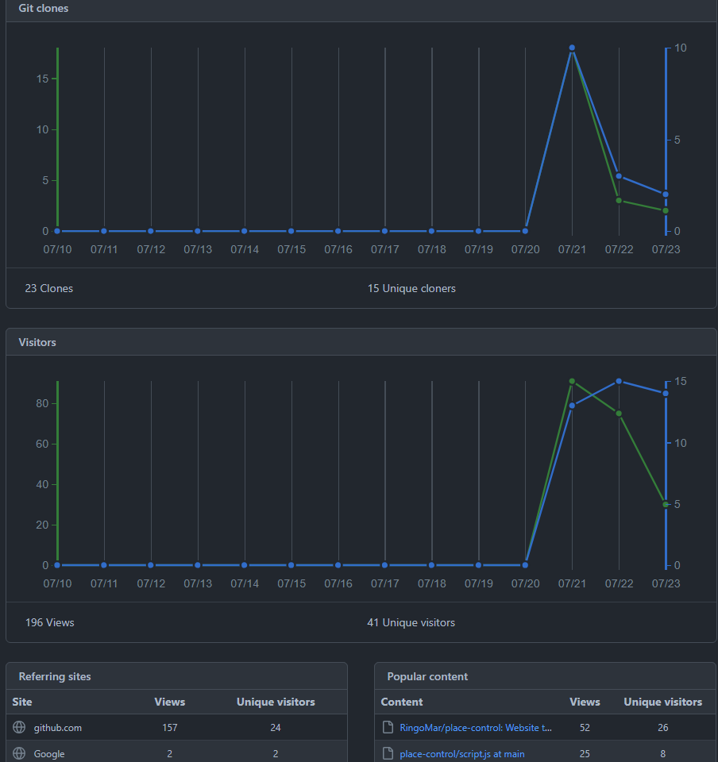
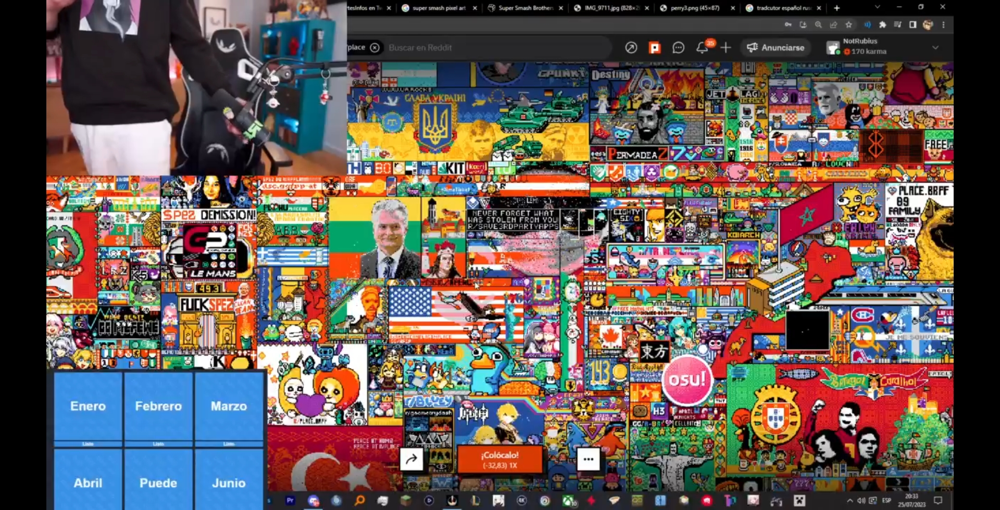
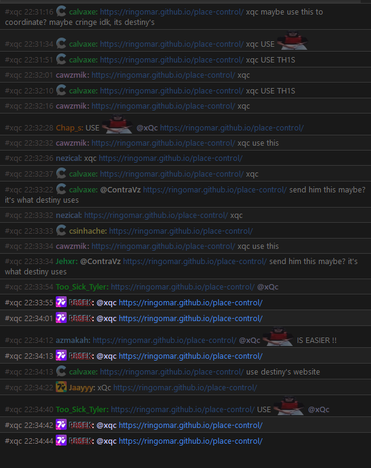

Place Control
Web Design
Tool
Automation
Time and time again, I look at something and think, 'No way, something so simple can't be done much simpler than this.'
Out of the ashes of frustration, Place Control was born!
What is r/place
r/place is an online collaborative art project that was hosted by Reddit in 2017. It consisted of a large blank canvas where users could place colored pixels, one at a time, every few minutes. The goal was to collaboratively create and modify pixel art and designs in real-time. Users could place pixels of any color at any location on the canvas, leading to the creation of intricate artworks, memes, and community symbols. It was a social experiment that attracted widespread participation from Reddit users around the world and resulted in a dynamic and constantly evolving digital canvas.
Orgin of Project
Reddit announced changes to its free API in April 2023, which will now require developers to pay for access. This change is affecting third-party apps like Apollo, which may need to pay up to $20 million per year for API requests. Several popular third-party Reddit apps, including Apollo, ReddPlanet, Sync, and Reddit is Fun, are shutting down due to the new API pricing.
The return of r/Place is seen as a response to controversial API changes in the platform. Besides the point, r/place has become popular among discords, gamers & streamers in the Twitch community. One of the notable communities that rise every year for r/place is Destiny.
Destiny devised a foolproof method for organizing his community and coordinating their pixel placements on the canvas. He implemented a rule allowing only users born on a specific day of the month to participate. However, tracking all the different birth months, days, and cooldown times posed a challenge. To address this issue, I developed a simple website that, when activated, would track the cooldown period and display which users were ready to contribute. This tool gained widespread attention as its public URL enabled many others to adopt and adapt our method.
Devlopment Cycle
It started with a concept in MS Paint
In this moment I had a working thoery and in saying it out loud to a fellow chatter I was able to create a concept really quicky of what I believe would work
Then in Javascript we array the buttons and lay them out on the page, add some css styles and have the prototype.
Then we made it come alive!
The cyan color being part of the final verson was changed out for a blue color that matches Destiny's theme.
Notice the "DEFCON" button that never made it into the final verson it was replaced later for start all button.
4. We have multiple streamers using our program to combat this i added branding everywhere and these boxes that was a troll to mess with the bitrate on stream.
 

Here are some starts from the people viewing the program and doing PR's etc
Here are examples of streams using tha porgram and being recommend it.
